Next: 経時的繰り返し測定デザインの最適化とサンプルサイズ Up: 経時的繰り返し測定デザイン Previous: 混合効果モデルへのベイジアンアプローチ
同一群内においても，平均的な反応プロファイルが意味を成さないほど個体差が大きいことがわかる。
反応プロファイルを統計的に分類することは可能だろうか？（潜在プロファイルモデル（潜在クラスモデル））
Rによるデータの読み込みと整形
> data11 <- read.csv("data11.csv") # 丹後 (1989) に公開されている164名分のデータ
> head(data11)
id w.0 w.4 w.8 w.12 w.16 treatment
1 1 52 76 81 77 70 1
2 2 51 74 86 66 83 1
3 3 91 138 147 74 90 1
4 4 57 55 70 44 40 1
5 5 286 65 91 11 19 1
6 6 655 204 101 70 65 1
> data11.long <- reshape(data11, idvar = "id",timevar = "week", v.names = "gpt",
+ varying = c("w.0", "w.4", "w.8", "w.12","w.16"),
+ times = c(0,4,8,12,16), direction="long")
> data11.long <- data11.long[order(data11.long$id),]
> data11.long$gpt0 <- rep(data11$w.0, each=5)
> data11.long$id <- factor(data11.long$id)
> data11.long$treatment <- factor(data11.long$treatment)
> data11.long$week <- factor(data11.long$week)
> head(data11.long, n=10)
id treatment week gpt gpt0
1.0 1 1 0 52 52
1.4 1 1 4 76 52
1.8 1 1 8 81 52
1.12 1 1 12 77 52
1.16 1 1 16 70 52
2.0 2 1 0 51 51
2.4 2 1 4 74 51
2.8 2 1 8 86 51
2.12 2 1 12 66 51
2.16 2 1 16 83 51
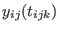
：群  の患者
の患者  における測定時点 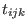
の得点
（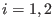
,
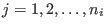
,
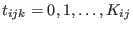
）
における測定時点 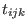
の得点
（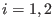
,
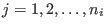
,
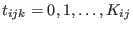
）
ベースラインデータからの差（CFB）
について，これが潜在プロファイル 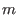 ( 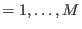 ) に属するとし，
とする。 平均関数については，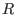 次の多項式
が用いられることが多い。
ここで，ある患者の反応プロファイル 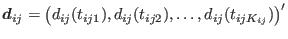 に関する確率密度関数は，
という混合分布で表される。 ただし， 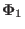 は， , 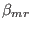 , 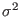 のパラメータ群を含むベクトル。
要は，各潜在プロファイルにおける各反応プロファイルに対して，潜在プロファイルに所属している確率で重み付き平均を取ったものが，その反応プロファイルの確率密度ということ。
パラメータは，対数尤度
を利用した最尤法で推定できる。
また，患者  が
番目の潜在プロファイルに帰属する確率（相対的帰属確率）は，
が
番目の潜在プロファイルに帰属する確率（相対的帰属確率）は，
すなわち，「プロファイル でその反応プロファイルが得られる確率」を「その反応プロファイルが得られる確率」で割ったものとして表される。
Taichi Okumura